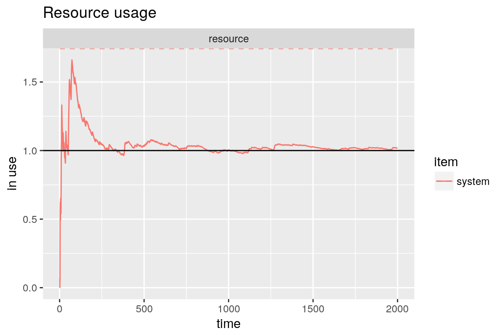
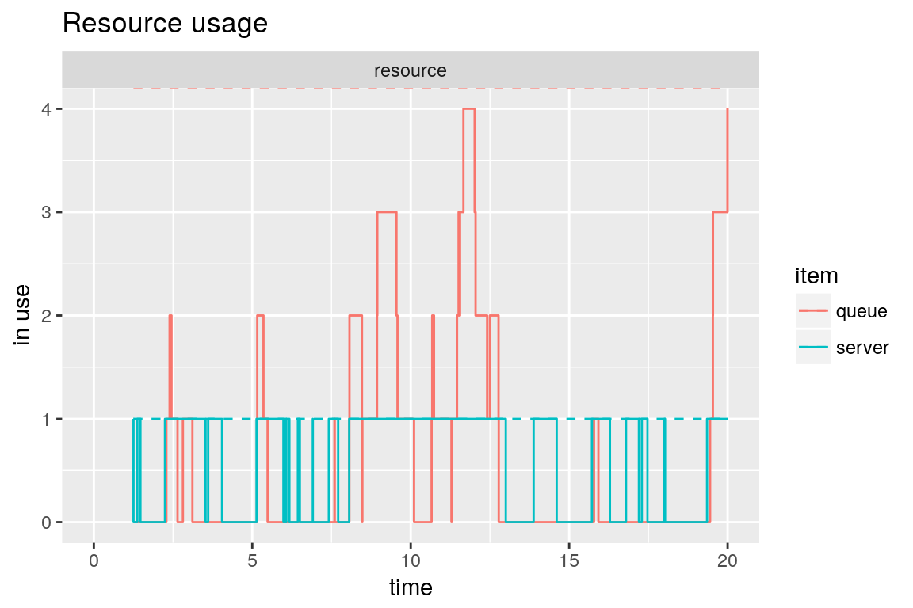

Queueing Systems
Iñaki Ucar
2016-12-28
library(simmer)
library(ggplot2)
library(dplyr)
library(parallel)
set.seed(1234)The M/M/1 system
In Kendall’s notation, an M/M/1 system has exponential arrivals (M/M/1), a single server (M/M/1) with exponential service time (M/M/1) and an inifinite queue (implicit M/M/1/\(\infty\)). For instance, people arriving at an ATM at rate \(\lambda\), waiting their turn in the street and withdrawing money at rate \(\mu\).
Let us remember the basic parameters of this system:
\[\begin{aligned} \rho &= \frac{\lambda}{\mu} &&\equiv \mbox{Server utilization} \\ N &= \frac{\rho}{1-\rho} &&\equiv \mbox{Average number of customers in the system (queue + server)} \\ T &= \frac{N}{\lambda} &&\equiv \mbox{Average time in the system (queue + server) [Little's law]} \\ \end{aligned}\]
Whenever \(\rho < 1\). If that is not true, it means that the system is unstable: there are more arrivals than the server is capable of handling, and the queue will grow indefinitely.
The simulation of an M/M/1 system is quite simple using simmer:
lambda <- 2
mu <- 4
rho <- lambda/mu # = 2/4
mm1.trajectory <- trajectory() %>%
seize("resource", amount=1) %>%
timeout(function() rexp(1, mu)) %>%
release("resource", amount=1)
mm1.env <- simmer() %>%
add_resource("resource", capacity=1, queue_size=Inf) %>%
add_generator("arrival", mm1.trajectory, function() rexp(1, lambda)) %>%
run(until=2000)Our package provides convenience plotting functions to quickly visualise the usage of a resource over time, for instance. Down below, we can see how the simulation converges to the theoretical average number of customers in the system.
# Evolution of the average number of customers in the system
graph <- plot_resource_usage(mm1.env, "resource", items="system")
#> Warning: 'plot_resource_usage' is deprecated.
#> Use 'simmer.plot::plot' instead.
#> See help("Deprecated")
# Theoretical value
mm1.N <- rho/(1-rho)
graph + geom_hline(yintercept=mm1.N)
It is possible also to visualise, for instance, the instantaneous usage of individual elements by playing with the parameters items and steps.
plot_resource_usage(mm1.env, "resource", items=c("queue", "server"), steps=TRUE) +
xlim(0, 20) + ylim(0, 4)
#> Warning: 'plot_resource_usage' is deprecated.
#> Use 'simmer.plot::plot' instead.
#> See help("Deprecated")
#> Warning: Removed 16112 rows containing missing values (geom_path).
#> Warning: Removed 16112 rows containing missing values (geom_path).
#> Warning: Removed 16112 rows containing missing values (geom_path).
Experimentally, we obtain the time spent by each customer in the system and we compare the average with the theoretical expression.
mm1.arrivals <- get_mon_arrivals(mm1.env)
mm1.t_system <- mm1.arrivals$end_time - mm1.arrivals$start_time
mm1.T <- mm1.N / lambda
mm1.T ; mean(mm1.t_system)
#> [1] 0.5
#> [1] 0.5012594It seems that it matches the theoretical value pretty well. But of course we are picky, so let’s take a closer look, just to be sure. Replication can be done with standard R tools:
envs <- mclapply(1:100, function(i) {
simmer() %>%
add_resource("resource", capacity=1, queue_size=Inf) %>%
add_generator("arrival", mm1.trajectory, function() rexp(100, lambda)) %>%
run(1000/lambda) %>%
wrap()
}, mc.set.seed=FALSE)Parallelizing has the shortcoming that we lose the underlying C++ objects when each thread finishes, but the wrap function does all the magic for us retrieving the monitored data. Let’s perform a simple test:
t_system <- get_mon_arrivals(envs) %>%
mutate(t_system = end_time - start_time) %>%
group_by(replication) %>%
summarise(mean = mean(t_system))
t.test(t_system$mean)
#>
#> One Sample t-test
#>
#> data: t_system$mean
#> t = 112.35, df = 99, p-value < 2.2e-16
#> alternative hypothesis: true mean is not equal to 0
#> 95 percent confidence interval:
#> 0.4883420 0.5059016
#> sample estimates:
#> mean of x
#> 0.4971218 Finally, the inverse of the mean difference between arrivals is the effective rate, which matches (approx.) the real lambda because there are no rejections.
lambda; 1/mean(diff(subset(mm1.arrivals, finished==TRUE)$start_time))
#> [1] 2
#> [1] 2.034654Moreover, an M/M/1 satisfies that the distribution of the time spent in the system is, in turn, an exponential random variable with average \(T\).
qqplot(mm1.t_system, rexp(1000, 1/mm1.T))
abline(0, 1, lty=2, col="red")M/M/c/k systems
An M/M/c/k system keeps exponential arrivals and service times, but has more than one server in general and a finite queue, which often is more realistic. For instance, a router may have several processor to handle packets, and the in/out queues are necessarily finite.
This is the simulation of an M/M/2/3 system (2 server, 1 position in queue). Note that the trajectory is identical to the M/M/1 case.
lambda <- 2
mu <- 4
mm23.trajectory <- trajectory() %>%
seize("server", amount=1) %>%
timeout(function() rexp(1, mu)) %>%
release("server", amount=1)
mm23.env <- simmer() %>%
add_resource("server", capacity=2, queue_size=1) %>%
add_generator("arrival", mm23.trajectory, function() rexp(1, lambda)) %>%
run(until=2000)In this case, there are rejections when the queue is full.
mm23.arrivals <- get_mon_arrivals(mm23.env)
mm23.arrivals %>%
summarise(rejection_rate = sum(!finished)/length(finished))
#> rejection_rate
#> 1 0.02291365Despite this, the time spent in the system still follows an exponential random variable, as in the M/M/1 case, but the average has dropped.
mm23.t_system <- mm23.arrivals$end_time - mm23.arrivals$start_time
# Comparison with M/M/1 times
qqplot(mm1.t_system, mm23.t_system)
abline(0, 1, lty=2, col="red")Queueing Networks
Let us consider the following network of queues (example taken from Grotto Networking):

A network of queues.
There are three exponential generators (\(\lambda_1\), \(\lambda_2\), \(\lambda_4\)) that inject messages with exponential size of mean 100 bytes. There are four M/D/1 queues with a deterministic rate equal to 220 bytes/s. There is a 25% probability that messages from \(\lambda_1\) are dropped before the second queue, and a fork 35/65% for the output of the second queue to reach queues 3 and 4. We are interested, for instance, in the accumulated waiting time for messages entering queue 1 and exiting queue 3 or 4.
The original author of this example, Greg M. Bernstein, simulated this problem with this Python code. We’ll start by setting up the main constants and a couple of functions to set the message size and seize an M/D/1 queue:
mean_pkt_size <- 100 # bytes
lambda1 <- 2 # pkts/s
lambda3 <- 0.5 # pkts/s
lambda4 <- 0.6 # pkts/s
rate <- 2.2 * mean_pkt_size # bytes/s
# set an exponential message size of mean mean_pkt_size
set_msg_size <- function(.)
set_attribute(., "size", function() rexp(1, 1/mean_pkt_size))
# seize an M/D/1 queue by id; the timeout is function of the message size
md1 <- function(., id)
seize(., paste0("md1_", id), 1) %>%
timeout(function(attrs) attrs[["size"]] / rate) %>%
release(paste0("md1_", id), 1)The next step is to set up the three points of attachment for our generators:
to_queue_1 <- trajectory() %>%
set_msg_size() %>%
md1(1) %>%
leave(0.25) %>%
md1(2) %>%
branch(function() (runif(1) > 0.65) + 1, c(F, F),
trajectory() %>%
md1(3),
trajectory() %>%
md1(4))
to_queue_3 <- trajectory() %>%
set_msg_size() %>%
md1(3)
to_queue_4 <- trajectory() %>%
set_msg_size() %>%
md1(4)Finally, we prepare and run the simulation environment with the resources and generators required:
env <- simmer()
lapply(1:4, function(i) env %>% add_resource(paste0("md1_", i))) %>% invisible
env %>%
add_generator("arrival1_", to_queue_1, function() rexp(1, lambda1), mon=2) %>%
add_generator("arrival3_", to_queue_3, function() rexp(1, lambda3), mon=2) %>%
add_generator("arrival4_", to_queue_4, function() rexp(1, lambda4), mon=2) %>%
run(4000)
#> simmer environment: anonymous | now: 4000 | next: 4000.11349802496
#> { Resource: md1_1 | monitored: 1 | server status: 1(1) | queue status: 9(Inf) }
#> { Resource: md1_2 | monitored: 1 | server status: 1(1) | queue status: 3(Inf) }
#> { Resource: md1_3 | monitored: 1 | server status: 1(1) | queue status: 1(Inf) }
#> { Resource: md1_4 | monitored: 1 | server status: 0(1) | queue status: 0(Inf) }
#> { Generator: arrival1_ | monitored: 2 | n_generated: 8141 }
#> { Generator: arrival3_ | monitored: 2 | n_generated: 2053 }
#> { Generator: arrival4_ | monitored: 2 | n_generated: 2398 }In the analysis, we filter arrivals from generator 1 that reach queues 3 and 4, and we examine the average waiting time and the total number of messages:
res <- get_mon_arrivals(env, per_resource = TRUE) %>%
dplyr::select(name, resource) %>%
filter(resource %in% c("md1_3", "md1_4"))
arr <- get_mon_arrivals(env) %>%
mutate(waiting_time = end_time - (start_time + activity_time),
generator = regmatches(name, regexpr("arrival[[:digit:]]", name))) %>%
left_join(res) %>%
group_by(generator, resource)
#> Joining, by = "name"
summarise(arr, average = sum(waiting_time) / n())
#> Source: local data frame [5 x 3]
#> Groups: generator [?]
#>
#> generator resource average
#> <chr> <chr> <dbl>
#> 1 arrival1 md1_3 11.2998883
#> 2 arrival1 md1_4 10.8328548
#> 3 arrival1 <NA> 9.8526816
#> 4 arrival3 md1_3 0.8096275
#> 5 arrival4 md1_4 0.5094670
get_n_generated(env, "arrival1_") + get_n_generated(env, "arrival4_")
#> [1] 10539
count(arr)
#> Source: local data frame [5 x 3]
#> Groups: generator [?]
#>
#> generator resource n
#> <chr> <chr> <int>
#> 1 arrival1 md1_3 3951
#> 2 arrival1 md1_4 2158
#> 3 arrival1 <NA> 2015
#> 4 arrival3 md1_3 2052
#> 5 arrival4 md1_4 2397